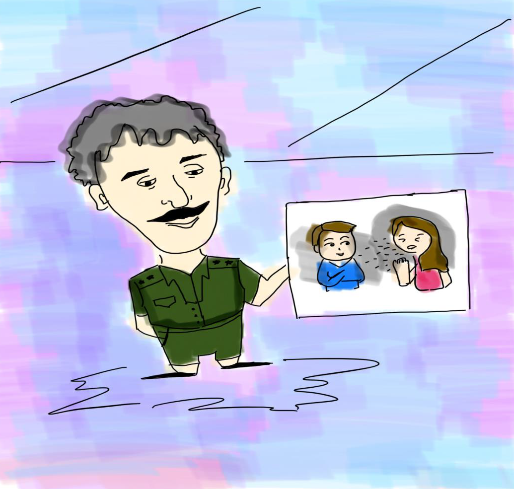
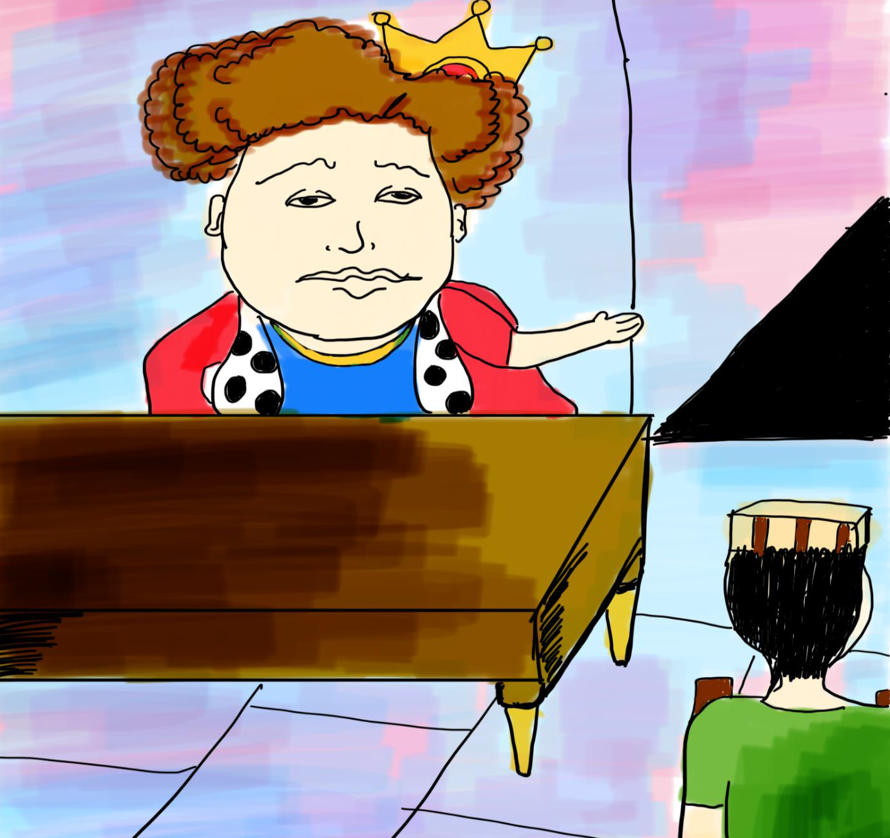
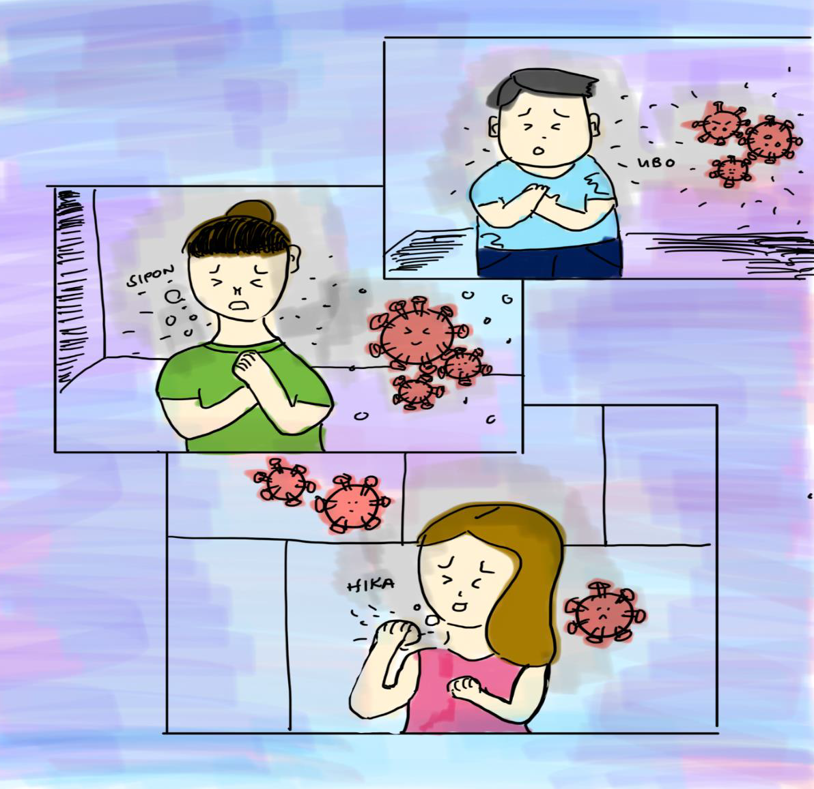

Kasunod ay tinukoy ng heneral ang dahilan ng pag-aalsa ng mga tao sa pagbibigay ng buwis at alay. “Mahal na Hari, tinik sa lalamunan ng ating mga mamamayan ang balibalitang may kumakalat na sakit sa ating bayan,” tugon ng Heneral ng Silangan. “Tiyak na ang iyong isang paa ay nasa hukay kapag nadapuan ka ng sakit na ito, sapagkat ang nabanggit na karamdaman ay nakahahawa, nakamamamatay,” dagdag pa niya.
Nabahala ang reyno sa kanyang naulinigan kaya naman minabuti niyang tapusin ang pagpupulong nang walang inihahaing solusyon. Labis ang kanyang pangamba sa mga hinaing na narinig. Ang haring sintigas ng bato ang puso ay lumambot sa takot na baka magkasakit siya.
Sa kasamaang palad, mas lalong kumalat ang sakit kung kaya’y hindi na napigilan ng mga tao na lumapit sa kaharian para sumangguni ng tulong sa kanilang pinuno. Agarang pinag-utos ng reyno sa mga kawal na ikulong ang mga taong may iniindang karamdaman. At wala ni isa sa kanila ang pwedeng lumabas pati na ang mga kasama nito sa tinutuluyan nang maiwasan ang pagkalat.
<< Previous Next >>